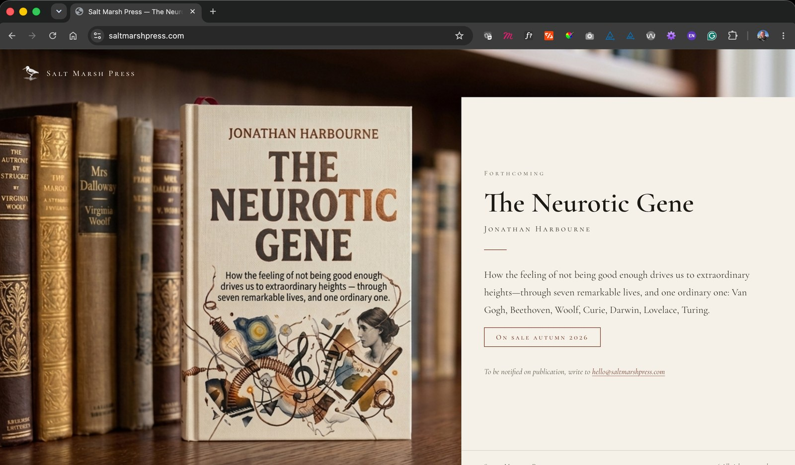

Publisher · Books · Two titles in progress
Saltmarsh Press
My own publishing imprint, the structure through which my writing will be published and distributed. Two books currently in progress.
- Publisher registration
- Long-form writing
- Independent distribution

Publishing under your own imprint is not a consolation prize for writers who cannot find a traditional publisher. It is a deliberate choice about who controls the work, who it reaches, and on what terms. Saltmarsh Press exists because the books I am writing are not easy to categorise, and categorisation is what traditional publishing runs on.
The imprint also reflects a view about the relationship between thinking and making. Writing a book is design work: you are constructing an argument, testing its structure, deciding what to leave out. The same discipline produces good software and good books: clarity of purpose, rigour about scope, honesty about what you do not yet know. Saltmarsh Press is where those two practices meet.
In progress
Useful
Why the software meant to help you is making everything worse
Most productivity software is not designed to make you more productive. It is designed to make you feel more productive, which is a different thing and produces different incentives. The calendar app, the task manager, the note-taking system: each one adds a layer of administration between you and the thing you were trying to do. Useful is an argument about how that happened, why it keeps happening, and what a different approach would look like.
In progress
The Neurotic Gene
Why the persistent sense of not being enough is installed, not inherent
A biographical and evolutionary argument. The feeling that you are somehow falling short is so common it is almost invisible: not quite measuring up, not quite keeping pace. The Neurotic Gene traces where that feeling comes from: not from personal inadequacy, but from a trait that was once adaptive and is now running in the wrong environment. Part memoir, part evolutionary biology, part argument about how we live now.
About the imprint
Saltmarsh Press is registered as a publisher and takes its name from the Essex coast where much of the writing happens. It is the structure through which future writing will be published and distributed: books, long-form essays, and other work too long for a magazine and too short for a traditional publisher.